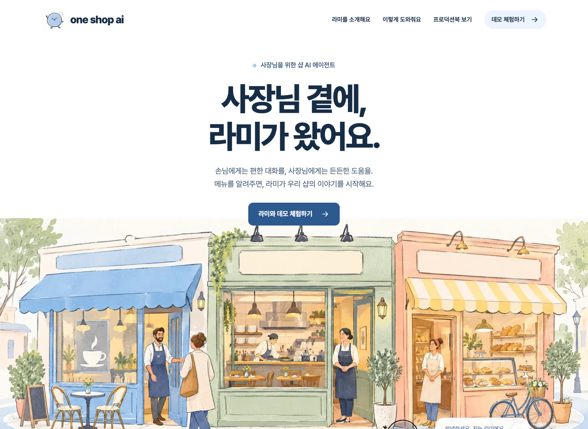
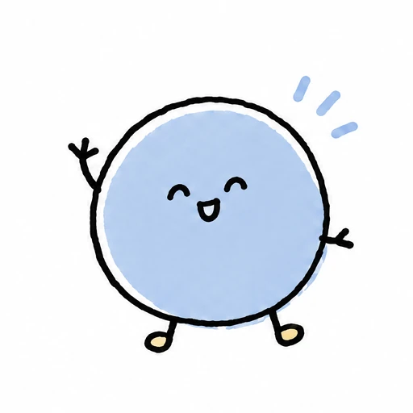
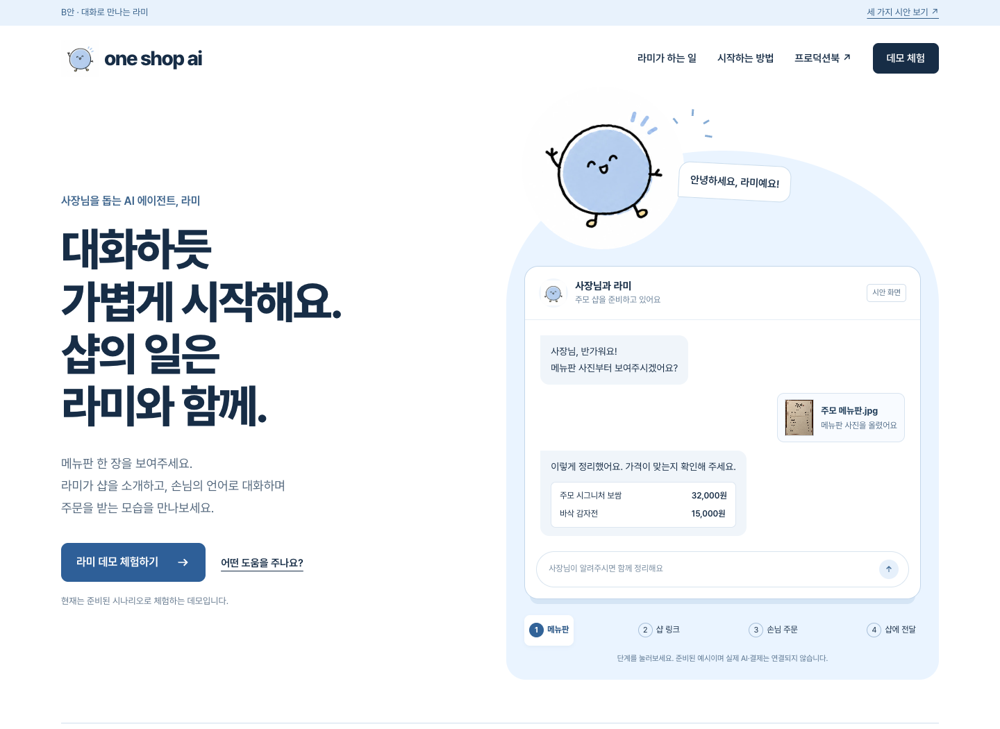
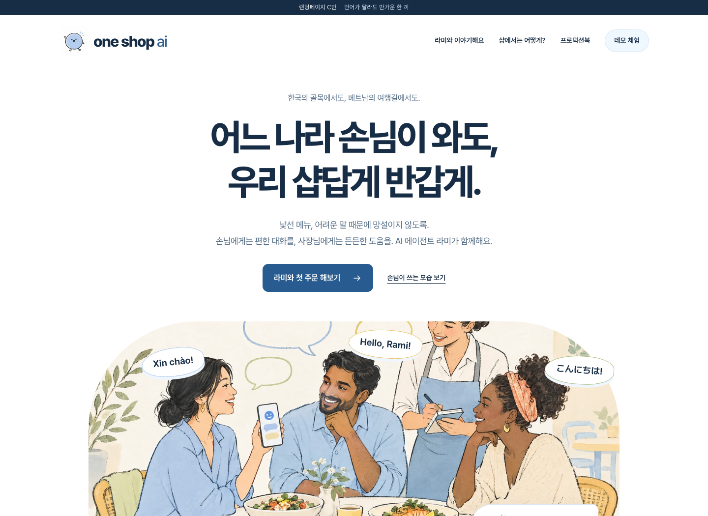

A

one shop ai프로덕션북 보기ramiai.dev를 위한 랜딩페이지 시안
사장님 곁의 든든한 AI 에이전트.
같은 라미를, 서로 다른 이야기로 소개합니다.
각 시안은 모바일에서도 직접 눌러볼 수 있습니다. 마음에 드는 방향을 고른 뒤 원도메인에 적용합니다.



작은 화면에 맞춰 글과 그림의 순서를 정리하고,
메뉴와 체험 버튼을 손가락으로 누르기 편하게 만들었습니다.